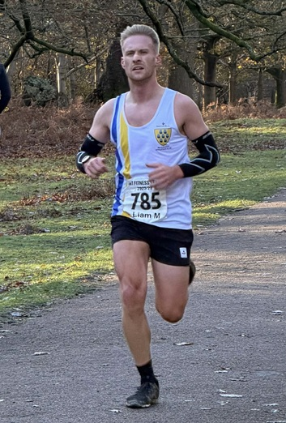
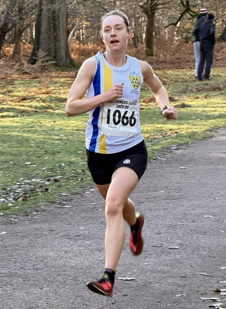
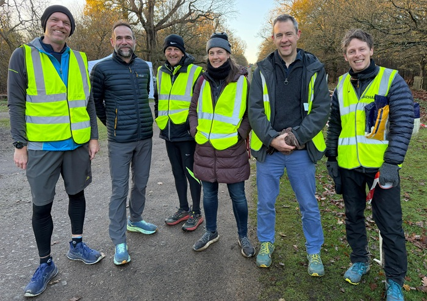
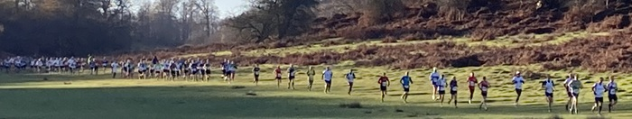

The third race in the 2025/26 Kent Fitness League series took place in Knole Park on Sunday November 30th, writes Jim Knight.
Saturday’s rain clouds blew away and it was a fine cold dawn that greeted the team of 12 organisers from Sevenoaks AC who finished setting up the course markings very early on Sunday morning. They were soon joined by a further 25 marshals who would guide the 558 runners from the town car park to the start on Broad Walk and marshal the hilly 5-mile course. Running conditions were great. Cool, sunny, slightly slippery underfoot, but the park was looking at its best with the sunshine enhancing the brilliant Autumn colours of the trees.
At 9 am the race started. It was hotly contested for the first 3 miles, but in the second half, 29-year-old Kieran Hughes from Dartford Harriers gradually pulled away to win by 21 seconds, from 25-year-old Harry Young from Paddock Wood AC. An impressive winning time on the hilly, slippery course.

Liam McLaughlin, once again, led the Sevenoaks AC team home in 4th position, closely followed by Guillaume Nineven in 9th (& 2nd M40) Ed Saunders in 27th, and Andrew Hutchinson in 32nd. The other members of the Sevenoaks scoring team were Keith Dowson (46th & 2nd M60), William Palmer (52nd), Harvey Taylor (65th), and Team Captain Dan Witt (77th). Once again, there was a great performance from Jeremy Winter finishing 3rd M70.
The men’s team came 2nd, behind a strong team from Petts Wood Runners.
However, the star performers of the day were, once again, Sevenoaks AC’s ladies who scored their first win of the series with a narrow victory over Canterbury Harriers.

Fastest Sevenoaks lady was Hannah Sangan in 6th place, followed by Ladies’ Captain, Caroline Fenwick (10th & 3rd W45), and Nicola Glover (13th & 2nd W35). Great runs from Sophie Day (20th) and Heather Fitzmaurice (30th) brought the team home in 1st place. Another great performance from our W65s with Jane Wiley 1st and Sally Shewell 2nd.
After victory on the day, the Sevenoaks Women are lying 2nd in the series, only one point behind Canterbury Harriers.
Sevenoaks AC combined team were 2nd on the day and remain 2nd in the series, just two points behind Petts Wood. However it will take a massive effort from Sevenoaks in the remaining races to overtake Petts Wood, who have won the first three in the series.
The full SAC results were:
| Ov Pos | Lg Pos | Bib | Runner | Age | Time | Club | Score | Rtg | # |
|---|---|---|---|---|---|---|---|---|---|
| 4 | 4 | 785 | Liam McLaughlin | 32 | 29:07 | Sevenoaks AC | M1 | 99.17 | 2 |
| 9 | 9 | 788 | Guillaume Nineven | 40 | 29:46 | Sevenoaks AC | V40:1 | 97.80 | 22 |
| 28 | 27 | 1118 | Edmund Saunders | 43 | 31:14 | Sevenoaks AC | V40:2 | 92.84 | 33 |
| 33 | 32 | 775 | Andrew Hutchinson | 46 | 31:39 | Sevenoaks AC | M2 | 91.46 | 30 |
| 49 | 46 | 764 | Keith Dowson | 62 | 32:46 | Sevenoaks AC | V60 | 87.60 | 26 |
| 56 | 52 | 790 | William Palmer | 53 | 33:19 | Sevenoaks AC | V50:1 | 85.95 | 14 |
| 69 | 65 | 795 | Harvey Taylor | 21 | 33:47 | Sevenoaks AC | M3 | 82.37 | 20 |
| 72 | 68 | 763 | Christopher Dick | 34 | 33:51 | Sevenoaks AC | NSBLS | 81.54 | 3 |
| 79 | 6 | 1066 | Hannah Sangan | 31 | 34:14 | Sevenoaks AC | F1 | 97.42 | 10 |
| 84 | 77 | 801 | Daniel Witt | 50 | 34:31 | Sevenoaks AC | V50:2 | 79.06 | 81 |
| 91 | 10 | 768 | Caroline Fenwick | 48 | 34:47 | Sevenoaks AC | V45 | 95.36 | 16 |
| 102 | 13 | 771 | Nicola Glover | 37 | 35:21 | Sevenoaks AC | V35 | 93.81 | 23 |
| 112 | 99 | 1119 | Darrell Smith | 58 | 36:09 | Sevenoaks AC | NS | 73.00 | 14 |
| 128 | 110 | 752 | Brian Allen | 53 | 36:40 | Sevenoaks AC | NS | 69.97 | 14 |
| 135 | 116 | 761 | Neil Colvin | 69 | 36:57 | Sevenoaks AC | NS | 68.32 | 3 |
| 138 | 20 | 762 | Sophie Day | 37 | 37:05 | Sevenoaks AC | F2 | 90.21 | 7 |
| 159 | 137 | 765 | Andrew Edwards | 45 | 37:49 | Sevenoaks AC | NS | 62.53 | Debut |
| 189 | 162 | 779 | Reinhard Kreth | 53 | 38:33 | Sevenoaks AC | NS | 55.65 | 2 |
| 191 | 164 | 754 | Andrew Ashlee | 56 | 38:36 | Sevenoaks AC | NS | 55.10 | 36 |
| 197 | 30 | 769 | Heather Fitzmaurice | 56 | 38:52 | Sevenoaks AC | V55 | 85.05 | 87 |
| 198 | 168 | 1035 | Graham Dwyer | 53 | 38:53 | Sevenoaks AC | NS | 53.99 | 26 |
| 238 | 42 | 789 | Anna O'Donovan | 25 | 40:25 | Sevenoaks AC | NS | 78.87 | 6 |
| 268 | 50 | 792 | Sarah Philpott | 47 | 41:32 | Sevenoaks AC | NS | 74.74 | 10 |
| 278 | 56 | 802 | Samantha Znetyniak | 50 | 41:48 | Sevenoaks AC | NS | 71.65 | 16 |
| 280 | 223 | 800 | Jeremy Winter | 71 | 41:56 | Sevenoaks AC | NS | 38.84 | 18 |
| 303 | 240 | 759 | Peter C | 31 | 42:57 | Sevenoaks AC | NS | 34.16 | 3 |
| 337 | 79 | 798 | Jane Wiley | 67 | 44:18 | Sevenoaks AC | NS | 59.79 | 3 |
| 367 | 92 | 793 | Sarah Shewell | 66 | 45:24 | Sevenoaks AC | NS | 53.09 | 135 |
| 455 | 324 | 776 | Achin Joshi | 38 | 49:37 | Sevenoaks AC | NS | 11.02 | 2 |
| 540 | 357 | 794 | Lionel Stielow | 76 | 59:27 | Sevenoaks AC | NS | 1.93 | 31 |
The full results are here.

The event was a great effort by everyone in the club, especially Race Director James Graham and his team of 40 marshals and helpers. A big thank-you to them and the 30 runners who competed for the club. Also a big thank-you, also, to the Kent Fitness League organisers (Stuart Wood and Brian Pitkin) and Race Referee (Dick Sharp) for their help and advice. The race could not take place without their support.
Men’s team captain, Dan Witt said, “A massive thanks to James Graham on behalf of the club for stepping up and taking on the Race Director role for the much-loved Knole Park fixture. The race would never have happened without his dedication and hard work. Also many thanks to his family assisting him and of course all the volunteers from within the club making the event possible.
The men’s team put in a really strong performance, building on the first two matches and being bolstered by the return of Ed Saunders to the team. Liam and Gui making the top 10 really shows the strength and ability we have in the club and all our other scorers and non-scorers beating other team’s scoring runners helped us to a strong third on the day. We are now tied on points with Thanet Road Runners for 2nd overall, so there’s plenty to motivate us all going into the New Year and aiming to consolidate a 2nd men’s placing at Minnis Bay.”
Women’s team captain, Caroline Fenwick added, “A fabulous result for SAC ladies' team. Racing on familiar ground has a huge advantage and the ladies proved it with a brilliant win over tough competition. Cheered on by Sevenoaks Athletics Club marshals we all put in the effort to secure the team's place. A special thank you to the person who made the greatest contribution, James Graham, who kindly organised a wonderful race which we could all then enjoy.”

The Kent Fitness League is a series of cross-country races between the 18 registered Athletics Clubs in Kent. Any number of club members can compete, but 13 are needed to score in the team competition – 8 men (of whom one must be aged 60+, two must be 50+ and two 40+) and 5 women (of whom one must be aged 55+ one 45+ and one 35+).
The next race in the series will be in Minnis Bay, Birchington on January 4th, 2026.